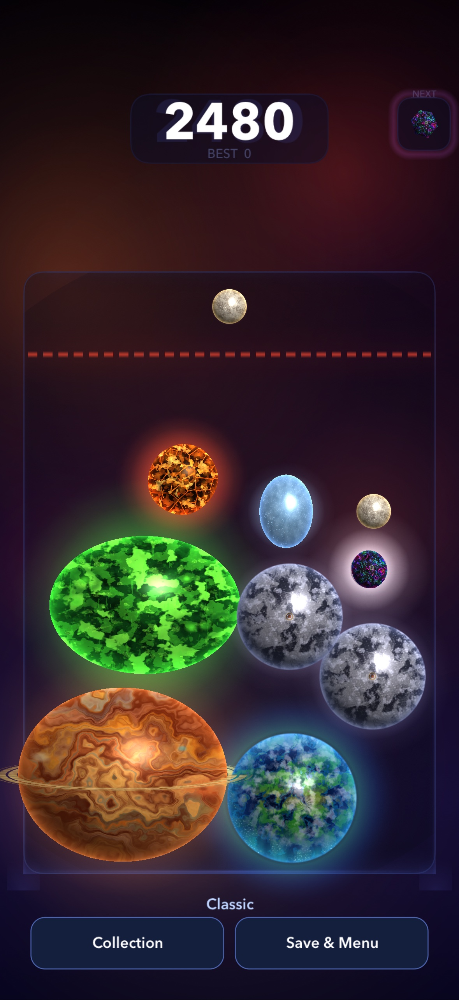
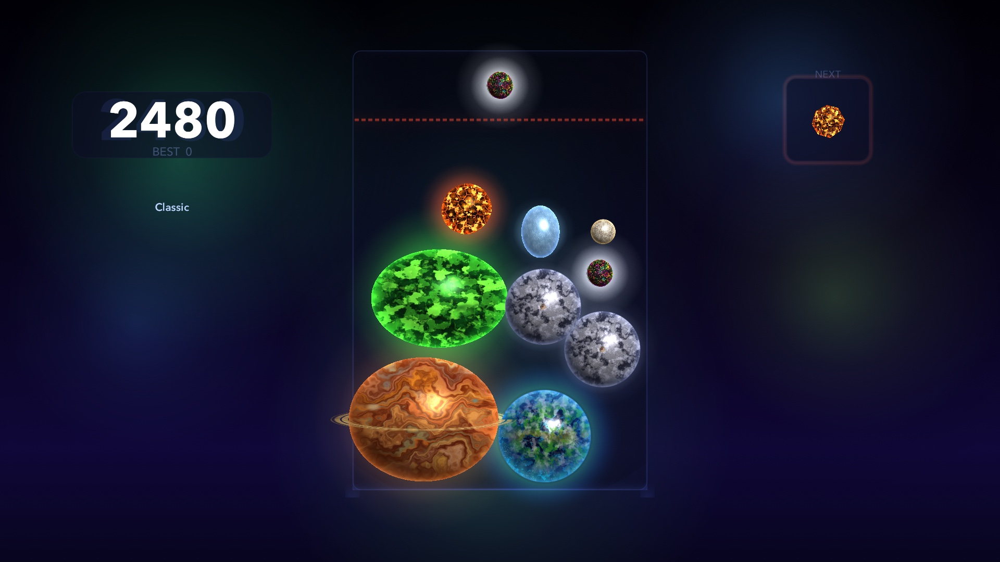

Save & Continue
Your board, queue, score, and abilities stay with the run. Save to the menu and continue later on the same device.
A cosmic puzzle, at your pace
Start with a tiny Moonlet. Find its match. Follow the chain reaction from glowing worlds to a powerful Black Hole.
Made for iPhone, iPad, and Apple TV.
One board. Eleven discoveries. Plenty of “one more try.”

Easy to start. Space to master.
Drag to find your spot, then release. Tap Next to swap your held piece when another choice fits better.
Two matching bodies become the next discovery. Merge again quickly to keep a combo going and build your score.
Keep body centers below the danger line. Ice shards clear small bodies; Storm Caller can remove a body when space gets tight.
Coming in version 1.2
Keep a favorite run going, meet today’s challenge, or take the pressure off and experiment.
Your board, queue, score, and abilities stay with the run. Save to the menu and continue later on the same device.
One scored attempt per device each UTC day, plus unlimited practice. Share the dated result with friends. Daily results stay local; Classic has its own Game Center board.
Reveal each body as you find it, keep its first-discovery date, and learn what makes it special.
Learn with three guided drops, then explore Zen without game over. Clear a crowded board whenever you want, with optional aim assistance and a separate best score.
Your universe, on the big screen
Play on Apple TV with the Siri Remote or a compatible extended gamepad. Aim with the touchpad or stick, select to drop, and pause whenever you need a moment.
See the controls →
From the smallest spark
Every tier has its own shape and character. The first four can appear in your queue. The rest are yours to create.
Your next discovery is a drop away
Questions before launch? Visit support.